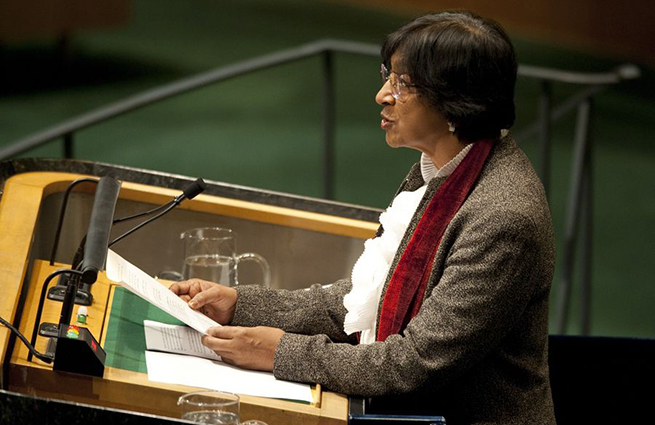
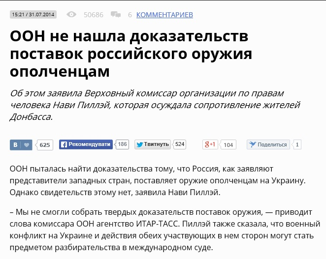

Офис Верховного комиссара ООН по правам человека не проводил исследования источников поставок вооружений сепаратистам
Около месяца назад большинство крупнейших российских СМИ (Россия 1, LifeNews, RT, ИТАР-ТАСС и другие) сообщили о том, что ООН якобы пыталась найти доказательства тому, что Россия поставляет оружие боевикам-сепаратистам на восток Украины.При этом ее попытки, по словам журналистов, не увенчались успехом.
«Мы не смогли собрать твердых доказательств поставок оружия», — цитировали они Верховного комиссара ООН по правам человека Нави Пиллэй в подтверждение своих слов.
В офисе Верховного комиссара ООН по правам человека не стали отрицать, что эти слова принадлежат Нави Пиллэй.Верховный комиссар действительно произнесла их в Женеве, отвечая на вопрос журналиста.
Однако вырванные из контекста слова абсолютно не передают смысл сказанного.
В пятницу 28 августа слова Верховного комиссара разъяснил помощник Генерального секретаря по правам человека Иван Шимонович.В интервью Stopfake.org он сказал, что Офис Верховного комиссара по правам человека никогда не проводил расследования источников появления оружия у сепаратистов и именно поэтому не располагает и не может располагать какими-либо доказательствами в этом вопросе.
Шимонович подчеркнул, что эта организация не занимается подобными вопросами.«Для того чтобы проводить такие расследования, нужен мандат.У нас абсолютно другие функции.Мы не проводили никаких расследований по оружию.Мы занимаемся выявлением случаев нарушений прав человека», — сказал он.
Таким образом утверждение о том, что ООН не имеет доказательств поставок Россией оружия, хотя и не является вымышленным, выглядит как сознательная манипуляция, цель которой — ссылаясь на якобы авторитетные источники, подтвердить непричастность Российской Федерации к поставкам вооружений сепаратистам из так называемых ДНР и ЛНР.
Также примечательно, что цитируя слова Верховного комиссара ООН по правам человека Нави Пиллэй, российские СМИ использовали только часть её ответа.Комментируя вопрос о российском оружии, она также сказала, что РФ должна приложить больше усилий, чтобы остановить поток вооруженных убийц через «прозрачную» часть украино-российской границы.
Posted On: 2014-08-28T21:00:00


Content Date: 2014-08-28
Download Date: 2021-07-16
Document ID: L0C04FG2D